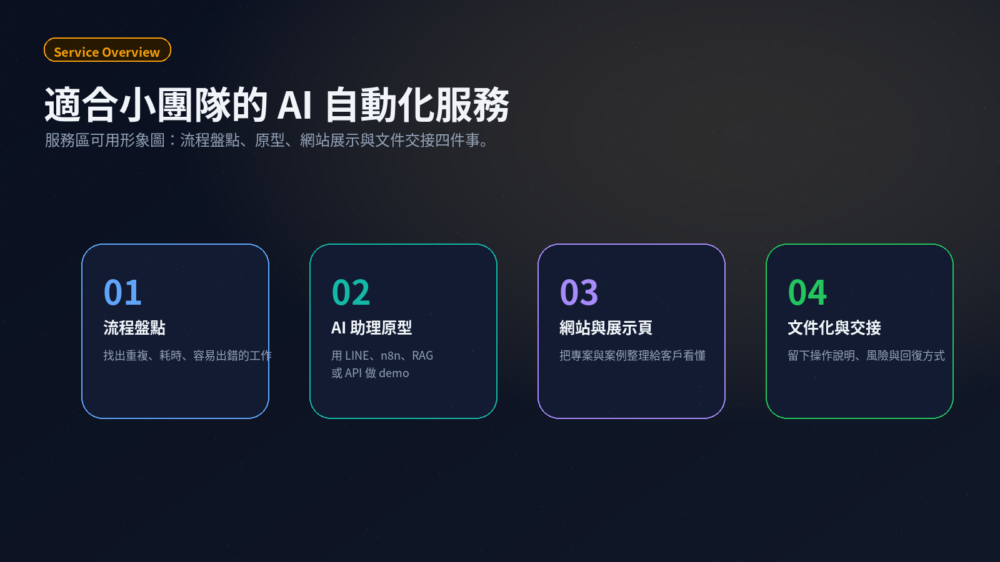
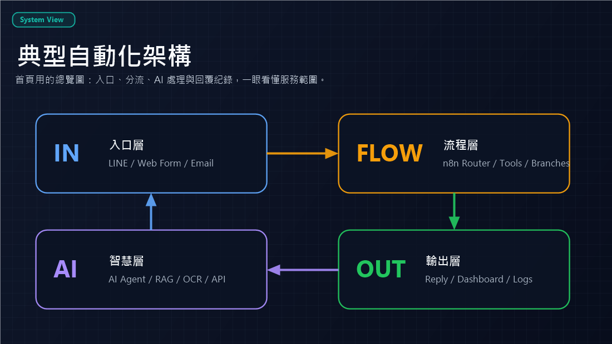

LINE AI 商務助理
讓 LINE 不只收訊息，也能分類需求、呼叫流程、整理回覆，逐步變成可追蹤的客戶工作台。
AI automation studio
我是 Alvis。Bunun Studio 專注在 LINE AI 助理、n8n 自動化、文件搜尋與網站展示。 先做出可示範的版本，再逐步變成穩定可用的系統。
panda@bunun.co
Selected Work
這些作品不是單純的功能 demo，而是把常見的訊息、文件、查詢、流程與展示需求， 整理成客戶能理解、能測試、能逐步落地的系統。
讓 LINE 不只收訊息，也能分類需求、呼叫流程、整理回覆，逐步變成可追蹤的客戶工作台。
把散落的招標文件整理成可查詢的知識庫，減少人工翻文件的時間。
把大型 workflow 拆成清楚模組，讓錯誤、測試與後續擴充更容易管理。
把天氣、空氣品質或公開資料包成簡單可問的 LINE 查詢介面。
從圖片取出聯絡資料，整理成後續可匯入、可追蹤的格式。
What I Build
我會先把問題講清楚，再做最小可用版本。重點不是堆很多技術， 而是讓你知道每一步為什麼存在、出了問題要去哪裡看。
找出重複、耗時、容易出錯的工作，畫成簡單流程圖，確認哪些部分值得自動化。
用 LINE、n8n、RAG 或 API 做出可測試版本，先驗證使用情境與回覆品質。
把專案、服務與案例整理成清楚網站，讓客戶快速理解你能解決什麼問題。
留下操作說明、風險提醒與回復方式，避免系統只靠記憶維護。

How We Work
AI 自動化最容易失控的地方，是一開始就想做完整系統。 我會把它拆成能看、能測、能改的階段。
先用白話確認使用者、輸入資料、期待輸出與不能碰的資料。
做出可操作的 demo，不放真 token，不碰正式資料，先看流程是否合理。
用實際情境測試錯誤回覆、空資料、格式問題與例外狀況。
補上文件、部署方式、回復方式與後續維護清單，再決定是否正式使用。
System View
除了抽象架構，我也整理了 11 張 n8n 操作邏輯流程圖。 首頁只放重點預覽，完整圖集可另外開頁查看。

Contact
你可以先寄一段簡單描述：現在卡在哪裡、每天大概花多少時間、 目前用 LINE、Excel、PDF、網站或其他工具。不要在信中放 API key、token 或密碼。